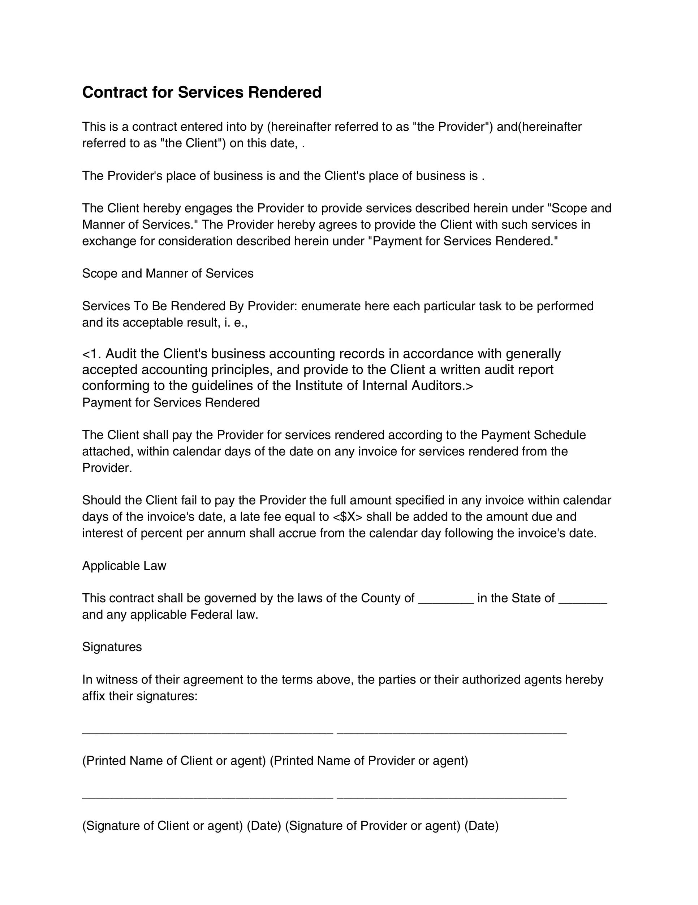

<div class="p-grid min-h-screen align-items-center">
  <div class="p-col-12 text-center">
    <div #wrapper class="wrapper">
      <div class="p-col-12 text-left alert">
        <div *ngIf="verificationProcessing"><b>Signing...</b></div>
        <div><small class='agreement'>Mutual Non-Disclosure Agreement</small></div>
      </div>
      <div *ngIf="userVerified" class="verified-adhar p-as-center">
        Aadhaar verified successfully
      </div>
      
      <button class="p-m-3" (click)="requestOtp = true" pButton type="button" label="Request OTP to sign"></button>
    </div>
  </div>
</div>


<p-dialog position="top" [closable]="false" header="Register Aadhaar" [appendTo]="wrapper" [(visible)]="requestOtp"
  [baseZIndex]="10000">
  <div class="register">
    <div class="title">
      <div class="aadhar-input">
        
        <p-inputMask [(ngModel)]="aadharnumber" #aadharnum="ngModel" mask="9999-9999-9999" required>
        </p-inputMask>
        <button class="p-ml-2" pButton type="button" (click)="onSubmit()" icon="pi pi-check"
          [loading]="aadharVerificationProcessing"
          [disabled]="!aadharVerificationProcessing && !(isAdharNumValid() && agreed)" label="Verify"></button>
      </div>
      <div class="fall-back">
        <small *ngIf="aadharnum.dirty && !isAdharNumValid()" class="p-invalid p-error">Enter a valid aadhar
          number</small>
      </div>
      <div class="agree-terms">
        <p-checkbox name="groupname" binary="true" [(ngModel)]="agreed"></p-checkbox> I agree to eSign this <u>KYC
          document</u> to get
        started
      </div>
    </div>
    <div class="otp-validator p-pt-4">
      <div><small *ngIf="showOtpHelper">Enter the 6 Digit OTP received to you mobile number.</small>
      </div>
      <p-inputMask class='p-mr-2' id="input2" type="text" #otpNum="ngModel" [(ngModel)]="otpNumber" mask="999999"
        required>
      </p-inputMask>
      <button pButton type="button" (click)="verifyOTP()" icon="pi pi-check" [loading]="verificationProcessing"
        [disabled]="!isOtpDisabled()" label="Submit"></button>
    </div>
  </div>
</p-dialog>